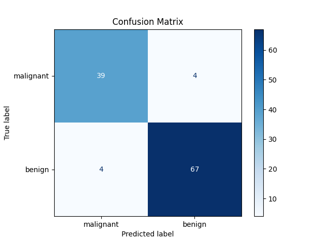
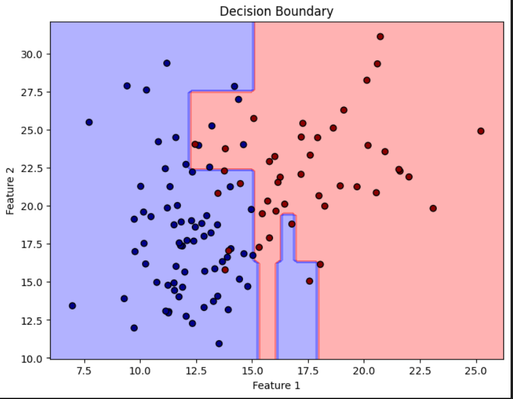
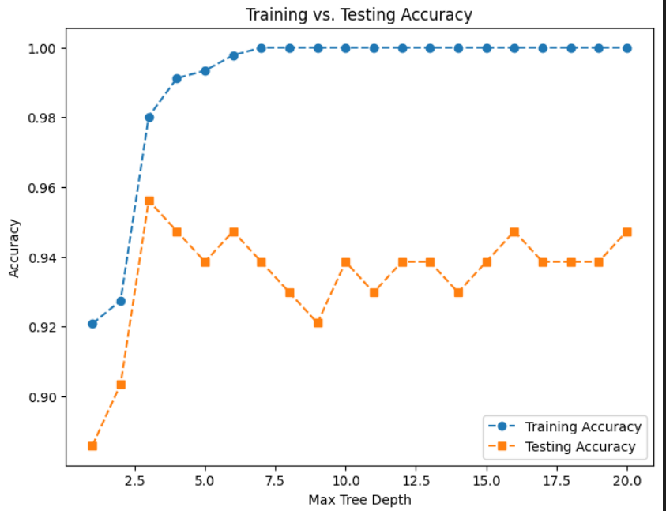

Understanding the Basic Architecture
In this deep dive, we'll explore decision trees from implementation to insights, examining how they make decisions based on information gain.
Decision Tree Class Implementation
class DecisionTree:
def __init__(self, min_samples_split=2, max_depth=100, n_feat=None):
self.min_samples_split = min_samples_split
self.max_depth = max_depth
self.n_feat = n_feat
self.root = NoneRequired Functions:
- fit - Train the model on data
- grow_tree - Recursively build the tree
- best_criteria - Find optimal splitting criteria
- information_gain - Calculate entropy reduction
- split - Divide dataset based on feature value
- most_common_label - Find majority class
- predict - Make predictions with trained model
- traverse_tree - Navigate decision paths
The model starts with all data points at the root and recursively divides the dataset at each step to maximize information gain, creating a tree-like structure of decisions.
Model Performance Visualization

Showing how much Accuracya and precision we have with the model

Decision boundaries created by the tree model on a 2D feature space, showing how the model partitions the space into regions.

The accuracy changement with changing max_depth
Key Learnings and Challenges
- Optimization Finding an optimum max_depth is crucial to balance fit and generalization
- Feature Prep Decision trees do not require feature scaling, unlike many other algorithms
- Regularization Managing overfitting through pruning and minimum sample constraints
Model Performance Metrics
Accuracy
93.85%
2.1%
ROC Curve (AUC)
0.93
0.05
Model Comparison
| Model | Accuracy | Training Time | Interpretability |
|---|---|---|---|
| Decision Tree | 93.85% | 0.45s | High |
| Random Forest | 95.2% | 1.32s | Medium |
| Logistic Regression | 87.3% | 0.21s | Medium |